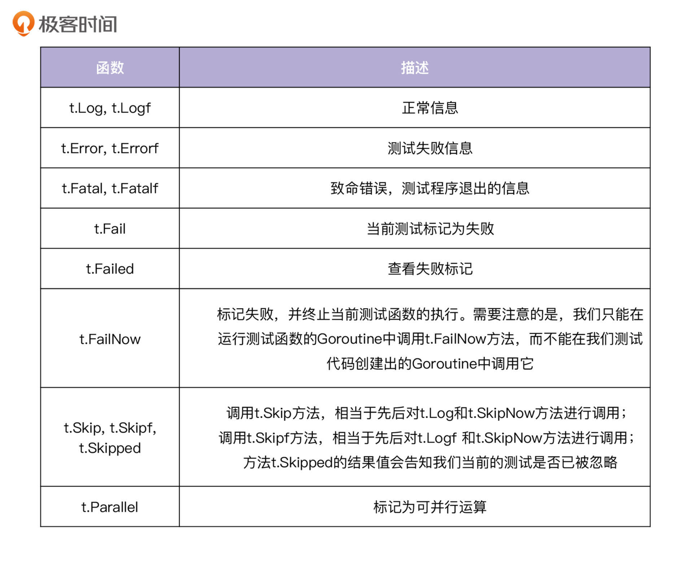
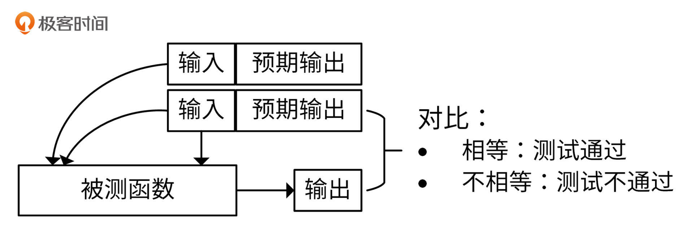

- 00 开篇词 从 0 开始搭建一个企业级 Go 应用.md
- 01 IAM系统概述：我们要实现什么样的 Go 项目？.md
- 02 环境准备：如何安装和配置一个基本的 Go 开发环境？.md
- 03 项目部署：如何快速部署 IAM 系统？.md
- 04 规范设计（上）：项目开发杂乱无章，如何规范？.md
- 05 规范设计（下）：commit 信息风格迥异、难以阅读，如何规范？.md
- 06 目录结构设计：如何组织一个可维护、可扩展的代码目录？.md
- 07 工作流设计：如何设计合理的多人开发模式？.md
- 08 研发流程设计（上）：如何设计 Go 项目的开发流程？.md
- 09 研发流程设计（下）：如何管理应用的生命周期？.md
- 10 设计方法：怎么写出优雅的 Go 项目？.md
- 11 设计模式：Go常用设计模式概述.md
- 12 API 风格（上）：如何设计RESTful API？.md
- 13 API 风格（下）：RPC API介绍.md
- 14 项目管理：如何编写高质量的Makefile？.md
- 15 研发流程实战：IAM项目是如何进行研发流程管理的？.md
- 16 代码检查：如何进行静态代码检查？.md
- 17 API 文档：如何生成 Swagger API 文档 ？.md
- 18 错误处理（上）：如何设计一套科学的错误码？.md
- 19 错误处理（下）：如何设计错误包？.md
- 20 日志处理（上）：如何设计日志包并记录日志？.md
- 21 日志处理（下）：手把手教你从 0 编写一个日志包.md
- 22 应用构建三剑客：Pflag、Viper、Cobra 核心功能介绍.md
- 23 应用构建实战：如何构建一个优秀的企业应用框架？.md
- 24 Web 服务：Web 服务核心功能有哪些，如何实现？.md
- 25 认证机制：应用程序如何进行访问认证？.md
- 26 IAM项目是如何设计和实现访问认证功能的？.md
- 27 权限模型：5大权限模型是如何进行资源授权的？.md
- 28 控制流（上）：通过iam-apiserver设计，看Web服务的构建.md
- 29 控制流（下）：iam-apiserver服务核心功能实现讲解.md
- 30 ORM：CURD 神器 GORM 包介绍及实战.md
- 31 数据流：通过iam-authz-server设计，看数据流服务的设计.md
- 32 数据处理：如何高效处理应用程序产生的数据？.md
- 33 SDK 设计（上）：如何设计出一个优秀的 Go SDK？.md
- 34 SDK 设计（下）：IAM项目Go SDK设计和实现.md
- 35 效率神器：如何设计和实现一个命令行客户端工具？.md
- 36 代码测试（上）：如何编写 Go 语言单元测试和性能测试用例？.md
- 37 代码测试（下）：Go 语言其他测试类型及 IAM 测试介绍.md
- 38 性能分析（上）：如何分析 Go 语言代码的性能？.md
- 39 性能分析（下）：API Server性能测试和调优实战.md
- 40 软件部署实战（上）：部署方案及负载均衡、高可用组件介绍.md
- 41 软件部署实战（中）：IAM 系统生产环境部署实战.md
- 42 软件部署实战（下）：IAM系统安全加固、水平扩缩容实战.md
- 43 技术演进（上）：虚拟化技术演进之路.md
- 44 技术演进（下）：软件架构和应用生命周期技术演进之路.md
- 45 基于Kubernetes的云原生架构设计.md
- 46 如何制作Docker镜像？.md
- 47 如何编写Kubernetes资源定义文件？.md
- 48 IAM 容器化部署实战.md
- 49 服务编排（上）：Helm服务编排基础知识.md
- 50 服务编排（下）：基于Helm的服务编排部署实战.md
- 51 基于 GitHub Actions 的 CI 实战.md
- 特别放送 Go Modules依赖包管理全讲.md
- 特别放送 Go Modules实战.md
- 特别放送 IAM排障指南.md
- 特别放送 分布式作业系统设计和实现.md
- 特别放送 给你一份Go项目中最常用的Makefile核心语法.md
- 特别放送 给你一份清晰、可直接套用的Go编码规范.md
- 直播加餐 如何从小白进阶成 Go 语言专家？.md
- 结束语 如何让自己的 Go 研发之路走得更远？.md
36 代码测试（上）：如何编写 Go 语言单元测试和性能测试用例？
你好，我是孔令飞。
从今天开始，我们就进入了服务测试模块，这一模块主要介绍如何测试我们的Go项目。
在Go项目开发中，我们不仅要开发功能，更重要的是确保这些功能稳定可靠，并且拥有一个不错的性能。要确保这些，就要对代码进行测试。开发人员通常会进行单元测试和性能测试，分别用来测试代码的功能是否正常和代码的性能是否满足需求。
每种语言通常都有自己的测试包/模块，Go语言也不例外。在Go中，我们可以通过testing包对代码进行单元测试和性能测试。这一讲，我会用一些示例来讲解如何编写单元测试和性能测试用例，下一讲则会介绍如何编写其他的测试类型，并介绍 IAM 项目的测试用例。
如何测试 Go 代码？
Go语言有自带的测试框架testing，可以用来实现单元测试（T类型）和性能测试（B类型），通过go test命令来执行单元测试和性能测试。
go test 执行测试用例时，是以go包为单位进行测试的。执行时需要指定包名，比如go test 包名，如果没有指定包名，默认会选择执行命令时所在的包。go test在执行时，会遍历以_test.go结尾的源码文件，执行其中以Test、Benchmark、Example开头的测试函数。
为了演示如何编写测试用例，我预先编写了4个函数。假设这些函数保存在test目录下的math.go文件中，包名为test，math.go代码如下：
package test
import (
"fmt"
"math"
"math/rand"
)
// Abs returns the absolute value of x.
func Abs(x float64) float64 {
return math.Abs(x)
}
// Max returns the larger of x or y.
func Max(x, y float64) float64 {
return math.Max(x, y)
}
// Min returns the smaller of x or y.
func Min(x, y float64) float64 {
return math.Min(x, y)
}
// RandInt returns a non-negative pseudo-random int from the default Source.
func RandInt() int {
return rand.Int()
}
在这一讲后面的内容中，我会演示如何编写测试用例，来对这些函数进行单元测试和性能测试。下面让我们先来看下测试命名规范。
测试命名规范
在我们对Go代码进行测试时，需要编写测试文件、测试函数、测试变量，它们都需要遵循一定的规范。这些规范有些来自于官方，有些则来自于社区。这里，我分别来介绍下测试文件、包、测试函数和测试变量的命名规范。
测试文件的命名规范
Go的测试文件名必须以_test.go结尾。例如，如果我们有一个名为person.go的文件，那它的测试文件必须命名为person_test.go。这样做是因为，Go需要区分哪些文件是测试文件。这些测试文件可以被go test命令行工具加载，用来测试我们编写的代码，但会被Go的构建程序忽略掉，因为Go程序的运行不需要这些测试代码。
包的命名规范
Go的测试可以分为白盒测试和黑盒测试。
- 白盒测试：将测试和生产代码放在同一个Go包中，这使我们可以同时测试Go包中可导出和不可导出的标识符。当我们编写的单元测试需要访问Go包中不可导出的变量、函数和方法时，就需要编写白盒测试用例。
- 黑盒测试：将测试和生产代码放在不同的Go包中。这时，我们仅可以测试Go包的可导出标识符。这意味着我们的测试包将无法访问生产代码中的任何内部函数、变量或常量。
在白盒测试中，Go的测试包名称需要跟被测试的包名保持一致，例如：person.go定义了一个person包，则person_test.go的包名也要为person，这也意味着person.go和person_test.go都要在同一个目录中。
在黑盒测试中，Go的测试包名称需要跟被测试的包名不同，但仍然可以存放在同一个目录下。比如，person.go定义了一个person包，则person_test.go的包名需要跟person不同，通常我们命名为person_test。
如果不是需要使用黑盒测试，我们在做单元测试时要尽量使用白盒测试。一方面，这是go test工具的默认行为；另一方面，使用白盒测试，我们可以测试和使用不可导出的标识符。
测试文件和包的命名规范，由Go语言及go test工具来强制约束。
函数的命名规范
测试用例函数必须以Test、Benchmark、Example开头，例如TestXxx、BenchmarkXxx、ExampleXxx，Xxx部分为任意字母数字的组合，首字母大写。这是由Go语言和go test工具来进行约束的，Xxx一般是需要测试的函数名。
除此之外，还有一些社区的约束，这些约束不是强制的，但是遵循这些约束会让我们的测试函数名更加易懂。例如，我们有以下函数：
package main
type Person struct {
age int64
}
func (p *Person) older(other *Person) bool {
return p.age > other.age
}
很显然，我们可以把测试函数命名为TestOlder，这个名称可以很清晰地说明它是Older函数的测试用例。但是，如果我们想用多个测试用例来测试TestOlder函数，这些测试用例该如何命名呢？也许你会说，我们命名为TestOlder1、TestOlder2不就行了？
其实，还有其他更好的命名方法。比如，这种情况下，我们可以将函数命名为TestOlderXxx，其中Xxx代表Older函数的某个场景描述。例如，strings.Compare函数有如下测试函数：TestCompare、TestCompareIdenticalString、TestCompareStrings。
变量的命名规范
Go语言和go test没有对变量的命名做任何约束。但是，在编写单元测试用例时，还是有一些规范值得我们去遵守。
单元测试用例通常会有一个实际的输出，在单元测试中，我们会将预期的输出跟实际的输出进行对比，来判断单元测试是否通过。为了清晰地表达函数的实际输出和预期输出，可以将这两类输出命名为expected/actual，或者got/want。例如：
if c.expected != actual {
t.Fatalf("Expected User-Agent '%s' does not match '%s'", c.expected, actual)
}
或者：
if got, want := diags[3].Description().Summary, undeclPlural; got != want {
t.Errorf("wrong summary for diagnostic 3\ngot: %s\nwant: %s", got, want)
}
其他的变量命名，我们可以遵循Go语言推荐的变量命名方法，例如：
- Go中的变量名应该短而不是长，对于范围有限的局部变量来说尤其如此。
- 变量离声明越远，对名称的描述性要求越高。
- 像循环、索引之类的变量，名称可以是单个字母（i）。如果是不常见的变量和全局变量，变量名就需要具有更多的描述性。
上面，我介绍了Go测试的一些基础知识。接下来，我们来看看如何编写单元测试用例和性能测试用例。
单元测试
单元测试用例函数以 Test 开头，例如 TestXxx 或 Test_xxx （ Xxx 部分为任意字母数字组合，首字母大写）。函数参数必须是 *testing.T，可以使用该类型来记录错误或测试状态。
我们可以调用 testing.T 的 Error 、Errorf 、FailNow 、Fatal 、FatalIf 方法，来说明测试不通过；调用 Log 、Logf 方法来记录测试信息。函数列表和相关描述如下表所示：

下面的代码是两个简单的单元测试函数（函数位于文件math_test.go中）：
func TestAbs(t *testing.T) {
got := Abs(-1)
if got != 1 {
t.Errorf("Abs(-1) = %f; want 1", got)
}
}
func TestMax(t *testing.T) {
got := Max(1, 2)
if got != 2 {
t.Errorf("Max(1, 2) = %f; want 2", got)
}
}
执行go test命令来执行如上单元测试用例：
$ go test
PASS
ok github.com/marmotedu/gopractise-demo/31/test 0.002s
go test命令自动搜集所有的测试文件，也就是格式为*_test.go的文件，从中提取全部测试函数并执行。-
go test还支持下面三个参数。
- -v，显示所有测试函数的运行细节：
$ go test -v
=== RUN TestAbs
--- PASS: TestAbs (0.00s)
=== RUN TestMax
--- PASS: TestMax (0.00s)
PASS
ok github.com/marmotedu/gopractise-demo/31/test 0.002s
- -run < regexp>，指定要执行的测试函数：
$ go test -v -run='TestA.*'
=== RUN TestAbs
--- PASS: TestAbs (0.00s)
PASS
ok github.com/marmotedu/gopractise-demo/31/test 0.001s
上面的例子中，我们只运行了以TestA开头的测试函数。
- -count N，指定执行测试函数的次数：
$ go test -v -run='TestA.*' -count=2
=== RUN TestAbs
--- PASS: TestAbs (0.00s)
=== RUN TestAbs
--- PASS: TestAbs (0.00s)
PASS
ok github.com/marmotedu/gopractise-demo/31/test 0.002s
多个输入的测试用例
前面介绍的单元测试用例只有一个输入，但是很多时候，我们需要测试一个函数在多种不同输入下是否能正常返回。这时候，我们可以编写一个稍微复杂点的测试用例，用来支持多输入下的用例测试。例如，我们可以将TestAbs改造成如下函数：
func TestAbs_2(t *testing.T) {
tests := []struct {
x float64
want float64
}{
{-0.3, 0.3},
{-2, 2},
{-3.1, 3.1},
{5, 5},
}
for _, tt := range tests {
if got := Abs(tt.x); got != tt.want {
t.Errorf("Abs() = %f, want %v", got, tt.want)
}
}
}
上述测试用例函数中，我们定义了一个结构体数组，数组中的每一个元素代表一次测试用例。数组元素的的值包含输入和预期的返回值：
tests := []struct {
x float64
want float64
}{
{-0.3, 0.3},
{-2, 2},
{-3.1, 3.1},
{5, 5},
}
上述测试用例，将被测函数放在for循环中执行：
for _, tt := range tests {
if got := Abs(tt.x); got != tt.want {
t.Errorf("Abs() = %f, want %v", got, tt.want)
}
}
上面的代码将输入传递给被测函数，并将被测函数的返回值跟预期的返回值进行比较。如果相等，则说明此次测试通过，如果不相等则说明此次测试不通过。通过这种方式，我们就可以在一个测试用例中，测试不同的输入和输出，也就是不同的测试用例。如果要新增一个测试用例，根据需要添加输入和预期的返回值就可以了，这些测试用例都共享其余的测试代码。
上面的测试用例中，我们通过got != tt.want来对比实际返回结果和预期返回结果。我们也可以使用github.com/stretchr/testify/assert包中提供的函数来做结果对比，例如：
func TestAbs_3(t *testing.T) {
tests := []struct {
x float64
want float64
}{
{-0.3, 0.3},
{-2, 2},
{-3.1, 3.1},
{5, 5},
}
for _, tt := range tests {
got := Abs(tt.x)
assert.Equal(t, got, tt.want)
}
}
使用assert来对比结果，有下面这些好处：
- 友好的输出结果，易于阅读。
- 因为少了
if got := Xxx(); got != tt.wang {}的判断，代码变得更加简洁。 - 可以针对每次断言，添加额外的消息说明，例如
assert.Equal(t, got, tt.want, "Abs test")。
assert包还提供了很多其他函数，供开发者进行结果对比，例如Zero、NotZero、Equal、NotEqual、Less、True、Nil、NotNil等。如果想了解更多函数，你可以参考go doc github.com/stretchr/testify/assert。
自动生成单元测试用例
通过上面的学习，你也许可以发现，测试用例其实可以抽象成下面的模型：

用代码可表示为：
func TestXxx(t *testing.T) {
type args struct {
// TODO: Add function input parameter definition.
}
type want struct {
// TODO: Add function return parameter definition.
}
tests := []struct {
name string
args args
want want
}{
// TODO: Add test cases.
}
for _, tt := range tests {
t.Run(tt.name, func(t *testing.T) {
if got := Xxx(tt.args); got != tt.want {
t.Errorf("Xxx() = %v, want %v", got, tt.want)
}
})
}
}
既然测试用例可以抽象成一些模型，那么我们就可以基于这些模型来自动生成测试代码。Go社区中有一些优秀的工具可以自动生成测试代码，我推荐你使用gotests工具。
下面，我来讲讲gotests工具的使用方法，可以分成三个步骤。
第一步，安装gotests工具：
$ go get -u github.com/cweill/gotests/...
gotests命令执行格式为：gotests [options] [PATH] [FILE] ...。gotests可以为PATH下的所有Go源码文件中的函数生成测试代码，也可以只为某个FILE中的函数生成测试代码。
第二步，进入测试代码目录，执行gotests生成测试用例：
$ gotests -all -w .
上面的命令会为当前目录下所有Go源码文件中的函数生成测试代码。
第三步，添加测试用例：
生成完测试用例，你只需要添加需要测试的输入和预期的输出就可以了。下面的测试用例是通过gotests生成的：
func TestUnpointer(t *testing.T) {
type args struct {
offset *int64
limit *int64
}
tests := []struct {
name string
args args
want *LimitAndOffset
}{
// TODO: Add test cases.
}
for _, tt := range tests {
t.Run(tt.name, func(t *testing.T) {
if got := Unpointer(tt.args.offset, tt.args.limit); !reflect.DeepEqual(got, tt.want) {
t.Errorf("Unpointer() = %v, want %v", got, tt.want)
}
})
}
}
我们只需要补全TODO位置的测试数据即可，补全后的测试用例见gorm_test.go文件。
性能测试
上面，我讲了用来测试代码的功能是否正常的单元测试，接下来我们来看下性能测试，它是用来测试代码的性能是否满足需求的。
性能测试的用例函数必须以Benchmark开头，例如BenchmarkXxx或Benchmark_Xxx（ Xxx 部分为任意字母数字组合，首字母大写）。
函数参数必须是*testing.B，函数内以b.N作为循环次数，其中N会在运行时动态调整，直到性能测试函数可以持续足够长的时间，以便能够可靠地计时。下面的代码是一个简单的性能测试函数（函数位于文件math_test.go中）：
func BenchmarkRandInt(b *testing.B) {
for i := 0; i < b.N; i++ {
RandInt()
}
}
go test命令默认不会执行性能测试函数，需要通过指定参数-bench <pattern>来运行性能测试函数。-bench后可以跟正则表达式，选择需要执行的性能测试函数，例如go test -bench=".*"表示执行所有的压力测试函数。执行go test -bench=".*"后输出如下：
$ go test -bench=".*"
goos: linux
goarch: amd64
pkg: github.com/marmotedu/gopractise-demo/31/test
BenchmarkRandInt-4 97384827 12.4 ns/op
PASS
ok github.com/marmotedu/gopractise-demo/31/test 1.223s
上面的结果只显示了性能测试函数的执行结果。BenchmarkRandInt性能测试函数的执行结果如下：
BenchmarkRandInt-4 90848414 12.8 ns/op
每个函数的性能执行结果一共有3列，分别代表不同的意思，这里用上面的函数举例子：
BenchmarkRandInt-4，BenchmarkRandInt表示所测试的测试函数名，4表示有4个CPU线程参与了此次测试，默认是GOMAXPROCS的值。90848414，说明函数中的循环执行了90848414次。12.8 ns/op，说明每次循环的执行平均耗时是12.8纳秒，该值越小，说明代码性能越高。
如果我们的性能测试函数在执行循环前，需要做一些耗时的准备工作，我们就需要重置性能测试时间计数，例如：
func BenchmarkBigLen(b *testing.B) {
big := NewBig()
b.ResetTimer()
for i := 0; i < b.N; i++ {
big.Len()
}
}
当然，我们也可以先停止性能测试的时间计数，然后再开始时间计数，例如：
func BenchmarkBigLen(b *testing.B) {
b.StopTimer() // 调用该函数停止压力测试的时间计数
big := NewBig()
b.StartTimer() // 重新开始时间
for i := 0; i < b.N; i++ {
big.Len()
}
}
B类型的性能测试还支持下面 4 个参数。
- benchmem，输出内存分配统计：
$ go test -bench=".*" -benchmem
goos: linux
goarch: amd64
pkg: github.com/marmotedu/gopractise-demo/31/test
BenchmarkRandInt-4 96776823 12.8 ns/op 0 B/op 0 allocs/op
PASS
ok github.com/marmotedu/gopractise-demo/31/test 1.255s
指定了-benchmem参数后，执行结果中又多了两列： 0 B/op，表示每次执行分配了多少内存（字节），该值越小，说明代码内存占用越小；0 allocs/op，表示每次执行分配了多少次内存，该值越小，说明分配内存次数越少，意味着代码性能越高。
- benchtime，指定测试时间和循环执行次数（格式需要为Nx，例如100x）：
$ go test -bench=".*" -benchtime=10s # 指定测试时间
goos: linux
goarch: amd64
pkg: github.com/marmotedu/gopractise-demo/31/test
BenchmarkRandInt-4 910328618 13.1 ns/op
PASS
ok github.com/marmotedu/gopractise-demo/31/test 13.260s
$ go test -bench=".*" -benchtime=100x # 指定循环执行次数
goos: linux
goarch: amd64
pkg: github.com/marmotedu/gopractise-demo/31/test
BenchmarkRandInt-4 100 16.9 ns/op
PASS
ok github.com/marmotedu/gopractise-demo/31/test 0.003s
- cpu，指定GOMAXPROCS。
- timeout，指定测试函数执行的超时时间：
$ go test -bench=".*" -timeout=10s
goos: linux
goarch: amd64
pkg: github.com/marmotedu/gopractise-demo/31/test
BenchmarkRandInt-4 97375881 12.4 ns/op
PASS
ok github.com/marmotedu/gopractise-demo/31/test 1.224s
总结
代码开发完成之后，我们需要为代码编写单元测试用例，并根据需要，给一些函数编写性能测试用例。Go语言提供了 testing 包，供我们编写测试用例，并通过 go test 命令来执行这些测试用例。
go test在执行测试用例时，会查找具有固定格式的Go源码文件名，并执行其中具有固定格式的函数，这些函数就是测试用例。这就要求我们的测试文件名、函数名要符合 go test 工具的要求：Go的测试文件名必须以 _test.go 结尾；测试用例函数必须以 Test 、 Benchmark 、 Example 开头。此外，我们在编写测试用例时，还要注意包和变量的命名规范。
Go项目开发中，编写得最多的是单元测试用例。单元测试用例函数以 Test 开头，例如 TestXxx 或 Test_xxx （Xxx 部分为任意字母数字组合，首字母大写）。函数参数必须是 *testing.T ，可以使用该类型来记录错误或测试状态。我们可以调用 testing.T 的 Error 、Errorf 、FailNow 、Fatal 、FatalIf 方法，来说明测试不通过；调用 Log 、Logf 方法来记录测试信息。
下面是一个简单的单元测试函数：
func TestAbs(t *testing.T) {
got := Abs(-1)
if got != 1 {
t.Errorf("Abs(-1) = %f; want 1", got)
}
}
编写完测试用例之后，可以使用 go test 命令行工具来执行这些测试用例。-
此外，我们还可以使用gotests工具，来自动地生成单元测试用例，从而减少编写测试用例的工作量。
我们在Go项目开发中，还经常需要编写性能测试用例。性能测试用例函数必须以Benchmark开头，以*testing.B 作为函数入参，通过 go test -bench <pattern> 运行。
课后练习
- 编写一个
PrintHello函数，该函数会返回Hello World字符串，并编写单元测试用例，对PrintHello函数进行测试。 - 思考一下，哪些场景下采用白盒测试，哪些场景下采用黑盒测试？
欢迎你在留言区与我交流讨论，我们下一讲见。
© 2019 - 2023 Liangliang Lee. Powered by gin and hexo-theme-book.